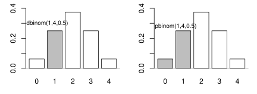
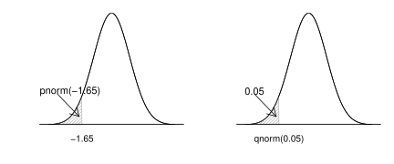

5. Líkindafræðileg undirstaða
Góður skilningur á tölfræði krefst góðrar undirstöðu í líkindafræði. Í
kafla 5.1 verða kynntar aðferðinar
factorial() og choose() sem eru mjög gagnlegar í
líkindareikningi. Að því loknu kynnumst við skipunum sem gera okkur
kleift að herma, reikna líkur og finna viðmiðunargildi sem byggja á
algengustu líkindadreifingunum.
Við munum sjá tvo flokka af skipunum fyrir strjálar líkindadreifingar í
kafla 5.2. Annar flokkurinn hefur endingarnar
\cdotbinom() en hinn \cdotpois(). Í kafla 5.3
munum við sjá sambærilegar skipanir fyrir samfelldar líkindadreifingar:
\cdotnorm, \cdotchisq, \cdott og \cdotf.
5.1. Líkindareikningur
5.1.1. Líkindareikningur
5.1.1.1. factorial()
Athugið
Inntak: tala sem við viljum reikna aðfeldi fyrir
Úttak: aðfeldi tölunnar
Aðferðin factorial() reiknar aðfeldi (!) tölu. Við mötum aðferðina
með þeirri tölu sem við viljum finna aðfeldið að og fáum til baka
útkomuna. Viljum við sem dæmi finna \(5!\) skrifum við:
factorial(5)
## [1] 120
Munið að \(5! = 5\cdot4\cdot3\cdot2\cdot1\).
5.1.1.2. choose()
Athugið
Inntak: tvær tölur sem við viljum reikna tvíliðustuðul fyrir
Úttak: tvíliðustuðull talnanna
Aðferðin choose() gefur okkur tvíliðustuðulinn \(n \choose k\).
Við mötum aðferðina með tölunum \(n\) og \(k\) og fáum til baka
útkomuna. Viljum við finna \(\binom{4}{2}\) skrifum við:
choose(4,2)
## [1] 6
5.2. Strjálar líkindadreifingar
5.2.1. Strjálar líkindadreifingar
Í þessum hluta munum við kynnast aðferðunum dbinom(), pbinom(),
dpois() og ppois(). Föllin sem byrja á d gefa okkur
massafallið (e. probability mass function) en föllin sem byrja á p
gefa okkur dreififallið (e. probability distribution funciton).
5.2.1.1. dbinom()
Athugið
Inntak: útkoma úr tvíkostadreifingu, stikar tvíkostadreifingarinnar
Úttak: líkur á útkomunni
dbinom() aðferðin reiknar líkur á forminu þar sem \(X\) er
slembistærð sem fylgir tvíkostadreifingunni. Við þurfum að mata
aðferðina með þremur tölum, \(k\), \(n\) og \(p\) þar sem
\(k\) er fjöldi heppnaðra tilrauna, \(n\) er fjöldi tilrauna og
\(p\) eru líkurnar á jákvæðri útkomu í hverri tilraun fyrir sig:
dbinom(k,n,p)
Viljum við reikna líkurnar á að fá tvo þorska þegar krónu er kastað upp fjórum sinnum skrifum við:
dbinom(2,4,0.5)
## [1] 0.375
Hægt er að mata aðferðina þannig að vigur er settur inn í stað tölu fyrir \(k\). Ef við viljum reikna \(P(X=0)\), \(P(X=1)\), \(P(X=2)\), \(P(X=3)\) og \(P(X=4)\) þar sem \(X\) fylgir tvíkostadreifingu með stika \(n = 4\) og \(p = 0.5\) skrifum við:
dbinom(c(0,1,2,3,4),4,0.5)
## [1] 0.0625 0.2500 0.3750 0.2500 0.0625
Aðferðin skilar þá fimm tölum, \(P(X=0)\), \(P(X=1)\), \(P(X=2)\), \(P(X=3)\) og \(P(X=4)\). Hægt er að skrifa þetta á þægilegri máta með:
dbinom(0:4,4,0.5)
## [1] 0.0625 0.2500 0.3750 0.2500 0.0625
5.2.1.2. pbinom()
Athugið
Inntak: útkoma úr tvíkostadreifingu, stikar tvíkostadreifingarinnar
Úttak: líkur
pbinom() aðferðin reiknar líkur á forminu þar sem \(X\) er
slembistærð sem fylgir tvíkostadreifingunni. Við þurfum að mata
aðferðina með þremur tölum, \(k\), \(n\) og \(p\) þar sem
\(k\) er fjöldi heppnaðra tilrauna, \(n\) er fjöldi tilrauna og
\(p\) eru líkurnar á jákvæðri útkomu í hverri tilraun fyrir sig:
pbinom(k,n,p)
Viljum við reikna líkurnar á að fá í mesta lagi tvo þorska (núll, einn eða tvo) þegar krónu er kastað upp fjórum sinnum skrifum við:
pbinom(2,4,0.5)
## [1] 0.6875
Munurinn á dbinom() og pbinom() er útskýrður á myndinni hér að neðan.
Sambærilega mynd mætti teikna fyrir dpois() og
ppois() sem fjallað er um hér að neðan.

5.2.1.3. dpois()
Athugið
Inntak: útkoma úr Poisson dreifingu, stiki Poisson dreifingarinnar
Úttak: líkur
dpois() aðferðin reiknar líkur á forminu þar sem \(X\) er
slembistærð sem fylgir Poisson dreifingunni. Við þurfum að mata
aðferðina með tveimur tölum, \(k\) og \(\lambda\) þar sem
\(k\) er fjöldi heppnaðra tilrauna og \(\lambda\) er væntigildi
slembistærðarinnar \(X\):
dpois(k,lambda)
Viljum við reikna líkurnar á að 3 kúnnar komi á kassann í Krónunni á einni mínútu þar sem meðalfjöldi kúnna á mínútu er 1.5 skrifum við:
dpois(3,1.5)
## [1] 0.1255107
Hægt er að mata aðferðina þannig að vigur er settur inn í stað tölu fyrir \(k\). Ef við viljum reikna \(P(X=0)\), \(P(X=1)\), \(P(X=2)\) og \(P(X=3)\) þar sem \(X\) fylgir Poisson dreifingu með \(\lambda = 1.5\) skrifum við:
dpois(c(0,1,2,3),1.5)
## [1] 0.2231302 0.3346952 0.2510214 0.1255107
Aðferðin skilar þá fjórum tölum, \(P(X=0)\), \(P(X=1)\), \(P(X=2)\) og \(P(X=3)\).
5.2.1.4. ppois()
Athugið
Inntak: útkoma úr Poisson dreifingu, stikar Poisson dreifingarinnar
Úttak: líkur
ppois() aðferðin reiknar líkur á forminu þar sem \(X\) er
slembistærð sem fylgir Poisson dreifingunni. Við þurfum að mata
aðferðina með tveimur tölum, \(k\) og \(\lambda\) þar sem
\(k\) er fjöldi heppnaðra tilrauna og \(\lambda\) er væntigildi
slembistærðarinnar \(X\):
ppois(k,lambda)
Viljum við reikna líkurnar á að í mesta lagi 3 kúnnar (núll, einn, tveir eða þrír) komi á kassann í krónunni á einni mínútu þar sem meðalfjöldi kúnna á mínútu er 1.5 skrifum við:
ppois(3,1.5)
## [1] 0.9343575
5.3. Samfelldar líkindadreifingar
5.3.1. Samfelldar líkindadreifingar
Í þessum hluta munum við kynnast aðferðunum sem byrja á p, q og
r. Aðferðirnar sem byrja á p skila okkur dreififalli (e.
probability distribution funciton), aðferðirnar sem byrja á q skila
okkur hlutfallsmörkum (e. quantiles) og aðferðirnar sem byja á r
skila okkur slembitölu úr dreifingunni.
5.3.1.1. pnorm()
Athugið
Inntak: viðmiðunargildi
Úttak: líkur
Helstu stillingar: meðaltal og staðalfrávik normaldreifingarinnar
Við mötum skipunina pnorm á tilteknu viðmiðunargildi \(x\) en
hún reiknar líkurnar á því að slembistærð sem fylgir normaldreifingu
taki gildi minna en gefna viðmiðunargildið. Þ.e.a.s. reiknar
\(P(X \leq x)\) þegar X fylgir normaldreifingu. Hún hefur einnig
fjórar sjálfgefnar stillingar en við munum aðeins nota tvær þeirra:
meansem tilgreinir meðaltal (\(\mu\)) normaldreifingarinnar.sdsem tilgreinir staðalfrávik (\(\sigma\)) normaldreifingarinnar.
Sjálfgefið er að mean = 0 og sd = 1, þ.e. að reiknað sé
dreififallið fyrir stöðluðu normaldreifinguna, \(\Phi(z)\). Skipunin
pnorm(0.8)
## [1] 0.7881446
reiknar því líkurnar á því að slembistærð sem fylgir staðlaðri normaldreifingu taki gildi sem er minna en 0.8 á meðan
pnorm(0.8,2,1.2)
## [1] 0.1586553
reiknar því líkurnar á því að slembistærð sem fylgir normaldreifingu með meðaltalið 2 og staðalfrávikið 1.2 taki gildi sem er minna en 0.8.
5.3.1.2. qnorm()
Athugið
Inntak: líkur
Úttak: viðmiðunargildi
Helstu stillingar: meðaltal og staðalfrávik normaldreifingarinnar
Við mötum skipunina qnorm á tilteknum líkum en hún finnur það
viðmiðunargildi \(x\) sem er þannig að slembistærð sem fylgir
normaldreifingu hefur þær tilteknu líkur á að taka gildi sem er minna en
viðmiðunargildið. Þ.e.a.s. finnur það \(x\) sem er þannig að
\(P(X \leq x)\) er jafnt tilteknu líkunum.
Með \(z_{a}\) táknum við það \(z\)-gildi sem er þannig að slembistærð sem fylgir stöðluðu normaldreifingunni hefur líkurnar \(a\) á að taka gildi sem er minna en \(z_a\). Við reiknum \(z_{a}\) með skipuninni:
qnorm(a)
þar sem a eru tilteknu líkurnar.
Ef við erum að vinna með aðra normaldreifingu en þá stöðluðu þá þurfum við að tilgreina meðaltalið og staðalfrávikið þegar við notum aðferðina. Sem dæmi þá fáum við hvar við erum stödd á x-ásnum þegar 90% massans eru okkur á vinstri hönd í normaldreifingu með meðaltal 165 og staðalfrávik 3 með skipuninni:
qnorm(0.90,165,3)
## [1] 168.8447
Munurinn á pnorm() og qnorm() er útskýrður á myndinni hér að neðan.
Sambærilegar myndir mætti teikna fyrir aðrar dreifingar
sem fjallað er um hér að neðan.

5.3.1.3. rnorm()
Athugið
Inntak: fjöldi gilda sem skal herma
Úttak: hermd gildi
Helstu stillingar: meðaltal og staðalfrávik normaldreifingarinnar
rnorm aðferðin býr til gildi sem fylgja normaldreifingu. Það er
einnig oft kallað að herma gildi. Við mötum aðferðina með hversu mörg
gildi við viljum (n), meðaltali (mean) og staðalfráviki (sd)
normaldreifingarinnar.
rnorm(n, mean, sd)
Viljum við búa til 100 gildi sem fylgja normaldreifingu með meðaltal 162
og staðalfrávik 12 og geyma þær í breytunni y skrifum við:
y <- rnorm(100, 162, 12)
5.3.1.4. pt()
Athugið
Inntak: viðmiðunargildi, stiki t-dreifingar
Úttak: líkur
Við mötum skipunina pt á tilteknu viðmiðunargildi og tilteknum
frígráðum en hún reiknar líkurnar á því að slembistærð sem fylgir
t-dreifingu með þann frígráðufjölda taki gildi minna en gefna
viðmiðunargildið. Þ.e.a.s. reiknar \(P(X \leq x)\) þegar X fylgir
t-dreifingu. Skipunin
pt(0.8,5)
## [1] 0.769993
reiknar líkurnar á því að slembistærð sem fylgir t dreifingu með 5 frígráður taki gildi sem er minna en 0.8.
5.3.1.5. qt()
Athugið
Inntak: líkur, stiki t-dreifingar
Úttak: viðmiðunargildi
Við mötum skipunina qt á tilteknum líkum og frígráðum en hún finnur
það viðmiðunargildi sem er þannig að slembistærð sem fylgir t-dreifingu
með þann frígráðufjölda hefur þær tilteknu líkur á að taka gildi sem er
minna en viðmiðunargildið. Þ.e.a.s. finnur það \(x\) sem er þannig
að \(P(X \leq x)\) er jafnt tilteknu líkunum.
Með \(t_{a, (k)}\) táknum við það \(t\)-gildi sem er þannig að slembistærð sem fylgir t-dreifingu með \(k\) frígráður hefur líkurnar \(a\) á að taka gildi sem er minna en \(t_{a, (k)}\). Við reiknum \(t_{a, (k)}\) með skipuninni
qt(a,k)
þar sem a eru tilteknu líkurnar og k eru tilteknu frígráðurnar.
5.3.1.6. pchisq()
Athugið
Inntak: viðmiðunargildi, stiki kí-kvaðratdreifingar
Úttak: líkur
Við mötum skipunina pchisq á tilteknu viðmiðunargildi og tilteknum
frígráðum en hún reiknar líkurnar á því að slembistærð sem fylgir
kí-kvaðrat dreifingu með þann frígráðufjölda taki gildi minna en gefna
viðmiðunargildið. Þ.e.a.s. reiknar \(P(X \leq x)\) þegar X fylgir
kí- kvaðrat dreifingu. Skipunin
pchisq(0.8,5)
reiknar líkurnar á því að slembistærð sem fylgir kí-kvaðrat dreifingu með 5 frígráður taki gildi sem er minna en 0.8.
5.3.1.7. qt()
Athugið
Inntak: líkur, stiki kí-kvaðratdreifingar
Úttak: viðmiðunargildi
Við mötum skipunina qchisq á tilteknum líkum og frígráðum en hún
finnur það viðmiðunargildi sem er þannig að slembistærð sem fylgir
kí-kvaðrat dreifingu með þann frígráðufjölda hefur þær tilteknu líkur á
að taka gildi sem er minna en viðmiðunargildið. Þ.e.a.s. finnur það
\(x\) sem er þannig að \(P(X \leq x)\) er jafnt tilteknu
líkunum.
Með \(\chi^2_{a, (k)}\) táknum við það \(\chi^2\)-gildi sem er þannig að slembistærð sem fylgir kí-kvaðrat dreifingu með \(k\) frígráður hefur líkurnar \(a\) á að taka gildi sem er minna en \(\chi^2_{a, (k)}\). Við reiknum \(\chi^2_{a, (k)}\) með skipuninni
qchisq(a,k)
þar sem a eru tilteknu líkurnar og k eru tilteknu frígráðurnar.
5.3.1.8. pf()
Athugið
Inntak: viðmiðunargildi, stikar F-dreifingar
Úttak: líkur
Við mötum skipunina pf á tilteknu viðmiðunargildi og tilteknum
frígráðum, \(v_1\) og \(v_2\), en hún reiknar líkurnar á því að
slembistærð sem fylgir F-dreifingu með þann frígráðufjölda taki gildi
minna en gefna viðmiðunargildið. Þ.e.a.s. reiknar \(P(X \leq x)\)
þegar X fylgir F dreifingu. Skipunin
pf(0.8,5,8)
## [1] 0.4205391
reiknar líkurnar á því að slembistærð sem fylgir F-dreifingu með 5 og 8 frígráður taki gildi sem er minna en 0.8.
5.3.1.9. qf()
Athugið
Inntak: líkur, stiki F-dreifingar
Úttak: viðmiðunargildi
Við mötum skipunina qf á tilteknum líkum og frígráðum en hún finnur
það viðmiðunargildi sem er þannig að slembistærð sem fylgir F-dreifingu
með þann frígráðufjölda hefur þær tilteknu líkur á að taka gildi sem er
minna en viðmiðunargildið. Þ.e.a.s. finnur það \(x\) sem er þannig
að \(P(X \leq x)\) er jafnt tilteknu líkunum.
Með \(F_{a, (v_1,v_2)}\) táknum við það \(F\)-gildi sem er þannig að slembistærð sem fylgir F dreifingu með \(v_1\) og \(v_2\) frígráður hefur líkurnar \(a\) á að taka gildi sem er minna en \(F_{a, (v_1,v_2)}\). Við reiknum \(F_{a, (v_1,v_2)}\) með skipuninni
qf(a,v1,v2)
þar sem a eru tilteknu líkurnar og v1 og v2 eru tilteknu
frígráðurnar.
5.4. Leiksvæði fyrir R kóða
Hér fyrir neðan er hægt að skrifa R kóða og keyra hann. Notið þetta svæði til að prófa ykkur áfram með skipanir kaflans. Athugið að við höfum þegar sett inn skipun til að lesa inn puls gögnin sem eru notuð gegnum alla bókina.
# Gogn sott og sett i breytuna puls.
puls <- read.table ("https://raw.githubusercontent.com/edbook/haskoli-islands/main/pulsAll.csv", header=TRUE, sep=";")
# Setjid ykkar eigin koda her fyrir nedan:
# Sem daemi, skipunin head(puls) skilar fyrstu nokkrar radirnar i gognunum
# asamt dalkarheitum.
head(puls)